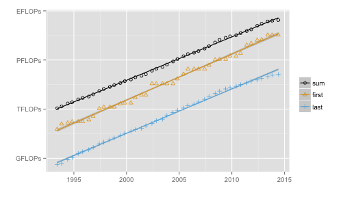

Computational power since 1993
The Top500 list ranks the 500 most powerful computers in the world and has been released twice a year, since 1993.
This list allows us to keep track of computer evolution, for instance, computing power.
flops <- read.table("flops.txt")
fitsum <- lm(log(sum, base = 2) ~ adate, data = flops)
ratesum <- fitsum$coefficients[2]
2^ratesum
## adate
## 1.84
The computing power is multiplied by approximately 1.8 every year.
Then, your computer could be as powerful as a supercomputer of the nineties!
Computational power of the fastest machine and the 500th at every ranking, as well as the sum of the power of all 500 machines in the list.

The \(y\) scale is logarithmic and the units are:
| GFLOPs | TFLOPs | PFLOPs | EFLOPs |
|---|---|---|---|
| \(10^9\) FLOPs | \(10^{12}\) FLOPs | \(10^{15}\) FLOPs | \(10^{18}\) FLOPs |